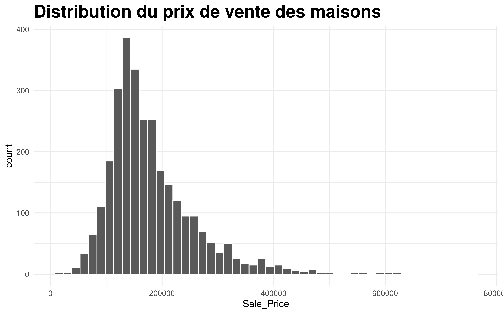
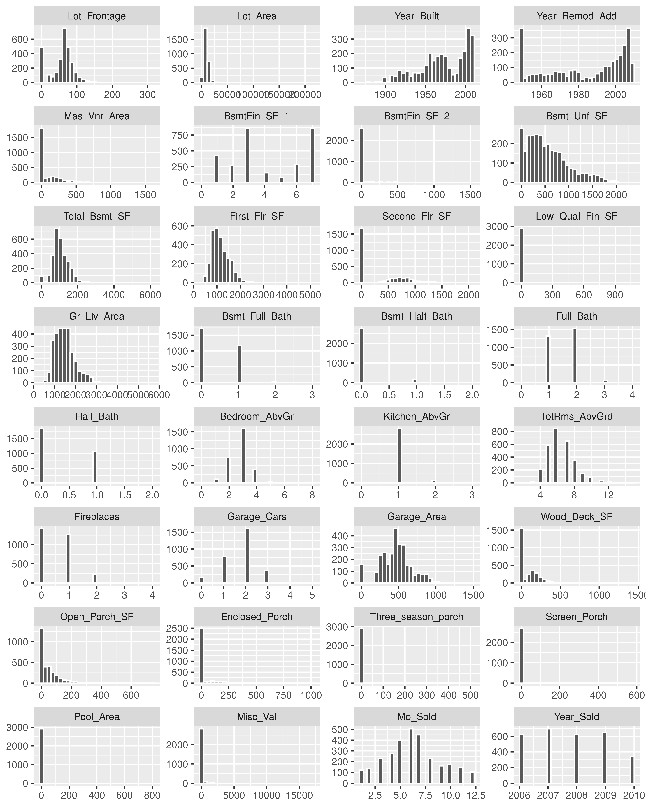
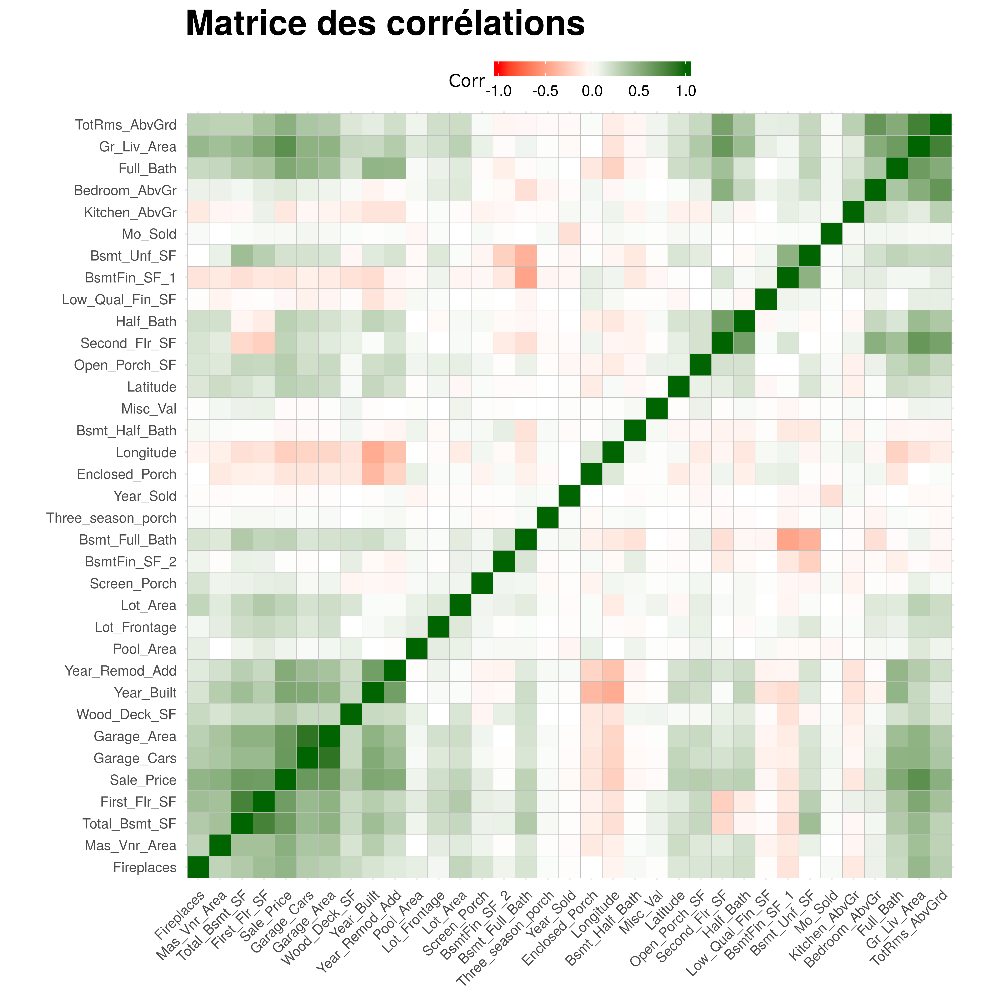
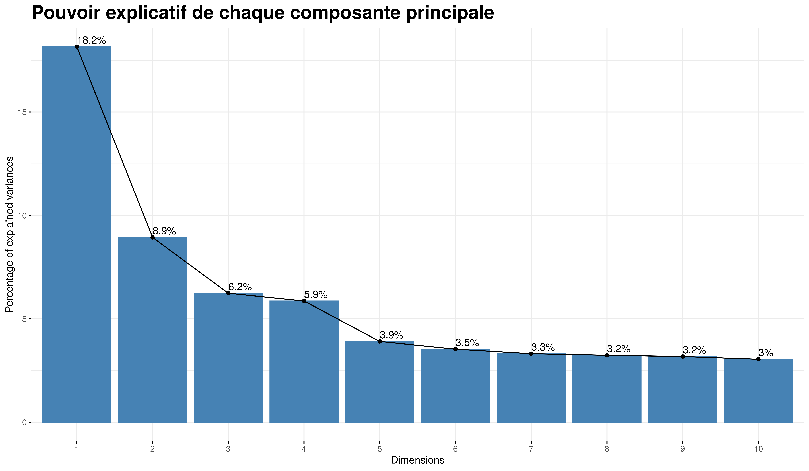

2 Analyse exploratoire des données
Il est important que nous explorions les données pour découvrir la structure des données. Le but de cette analyse exploratoire est d’étudier la variance associée au jeu de données. En effet une base de donnée comporte en elle une variance ou information et le but de tout travail économétrique consistant à modéliser la variable dépendante est de trouver un modèle qui arrive à expliquer la variance de cette variable dépendante en se basant sur des variables qu’on appelle variable explicatives.
L’analyse exploratoire permet entre autres de détecter des anomalies dans le jeu de données et les corriger si possibles.
2.1 Statistiques descriptives univariées
Nous allons afficher les statistiques descriptives des variables quantitatives continues présentes dans le jeu de données. Ces statistiques descriptives seront présentées sous formes d’un tableau à 5 colonnes qui affichent respectivement le minimum, la moyenne, l’écart-type, le maximum et la médiane.
Le tableau suivant présente les statistiques descriptives des colonnes numériques.
kable(statistiques_desc(subset(ames, select = -c(Longitude, Latitude))),
caption = "Tableau 1 : Statistiques descriptives sur les colonnes numériques")| Min | Moyenne | Ecart_type | Max | Médiane | |
|---|---|---|---|---|---|
| Lot_Frontage | 0 | 57.64778157 | 33.49944079 | 313 | 63.0 |
| Lot_Area | 1300 | 10147.92184300 | 7880.01775944 | 215245 | 9436.5 |
| Year_Built | 1872 | 1971.35631399 | 30.24536063 | 2010 | 1973.0 |
| Year_Remod_Add | 1950 | 1984.26655290 | 20.86028588 | 2010 | 1993.0 |
| Mas_Vnr_Area | 0 | 101.09692833 | 178.63454483 | 1600 | 0.0 |
| BsmtFin_SF_1 | 0 | 4.17747440 | 2.23337248 | 7 | 3.0 |
| BsmtFin_SF_2 | 0 | 49.70546075 | 169.14208929 | 1526 | 0.0 |
| Bsmt_Unf_SF | 0 | 559.07167235 | 439.54057106 | 2336 | 465.5 |
| Total_Bsmt_SF | 0 | 1051.25563140 | 440.96801766 | 6110 | 990.0 |
| First_Flr_SF | 334 | 1159.55767918 | 391.89088525 | 5095 | 1084.0 |
| Second_Flr_SF | 0 | 335.45597270 | 428.39571501 | 2065 | 0.0 |
| Low_Qual_Fin_SF | 0 | 4.67679181 | 46.31051003 | 1064 | 0.0 |
| Gr_Liv_Area | 334 | 1499.69044369 | 505.50888747 | 5642 | 1442.0 |
| Bsmt_Full_Bath | 0 | 0.43105802 | 0.52476196 | 3 | 0.0 |
| Bsmt_Half_Bath | 0 | 0.06109215 | 0.24517502 | 2 | 0.0 |
| Full_Bath | 0 | 1.56655290 | 0.55294061 | 4 | 2.0 |
| Half_Bath | 0 | 0.37952218 | 0.50262925 | 2 | 0.0 |
| Bedroom_AbvGr | 0 | 2.85426621 | 0.82773114 | 8 | 3.0 |
| Kitchen_AbvGr | 0 | 1.04436860 | 0.21407624 | 3 | 1.0 |
| TotRms_AbvGrd | 2 | 6.44300341 | 1.57296440 | 15 | 6.0 |
| Fireplaces | 0 | 0.59931741 | 0.64792092 | 4 | 1.0 |
| Garage_Cars | 0 | 1.76621160 | 0.76113672 | 5 | 2.0 |
| Garage_Area | 0 | 472.65836177 | 215.18719571 | 1488 | 480.0 |
| Wood_Deck_SF | 0 | 93.75187713 | 126.36156188 | 1424 | 0.0 |
| Open_Porch_SF | 0 | 47.53344710 | 67.48340014 | 742 | 27.0 |
| Enclosed_Porch | 0 | 23.01160410 | 64.13905921 | 1012 | 0.0 |
| Three_season_porch | 0 | 2.59249147 | 25.14133103 | 508 | 0.0 |
| Screen_Porch | 0 | 16.00204778 | 56.08737023 | 576 | 0.0 |
| Pool_Area | 0 | 2.24334471 | 35.59718062 | 800 | 0.0 |
| Misc_Val | 0 | 50.63515358 | 566.34428826 | 17000 | 0.0 |
| Mo_Sold | 1 | 6.21604096 | 2.71449243 | 12 | 6.0 |
| Year_Sold | 2006 | 2007.79044369 | 1.31661292 | 2010 | 2008.0 |
| Sale_Price | 12789 | 180796.06006826 | 79886.69235666 | 755000 | 160000.0 |
En moyenne les maisons vendues coûtent un peu plus de 180 mille dollars. Les prix varient fortement d’une maison à l’autre puisque le prix minimum de vente est de 12789 dollars tandis que le prix maximum est de plus de 755 mille dollars. Pour avoir une meilleure vision de la distribution des prix, nous pouvons représenter un histogramme des prix.
ggplot(data = ames, aes(x = Sale_Price)) +
geom_histogram(bins = 50, color = "white") +
labs(title = "Distribution du prix de vente des maisons") +
theme_minimal() +
theme(
plot.title = element_text(face = "bold", size = 20)
)
La distribution des prix est un peu concentrée vers la gauche, ce qui l’éloigne d’une distribution gaussienne (normale).
Nous pouvons également avoir un aperçu de l’ensemble des colonnes numériques du jeu de données en faisant une représentation graphique combinée de ces colonnes. Le graphique suivant présente les histogrammes ou diagramme e bâton de toutes les variables quantitatives présentes dans le jeu de données . Ce type de représentation a pour intérêt d’afficher les caractéristiques des variables qui n’étaient pas observables par les simples statistiques que nous avions présentées plus haut.
num_columns <- ames[sapply(ames, is.numeric)]
num_columns %>% subset(select = -c(Latitude, Longitude, Sale_Price)) %>%
mutate(id = "id") %>% reshape2::melt(id.var = "id") %>%
ggplot(aes(x = value)) + geom_histogram(bins = 30, color = "white") +
labs(x = NULL, y = NULL) +
facet_wrap(~variable, scale = "free", ncol = 4)
Parmi toutes les variables qui composent le jeu de données, nous observons qu’aucune ne suit une distribution normale. Certaines variables telles Bsmft_Half_Bath (salle de bain au sous-sol), Low_Qual_Fn_SF (superficie en pieds carrés construites de qualité médiocre), Kitchen_Abv_Grad (nombre de cuisine à l’étage), Enclosed_Porch (porche fermée en pieds carrés), Screen_Porch (écran de la véranda en pieds carrés), Pool_Area (superficie de la piscine) et Misc_Val (valeurs des caractéristiques diverses) soit 9 variables n’ont seulement qu’une seule unique valeur à savoir zéro.
En effet plusieurs des maisons n’ont pas ces caractéristiques mentionnées. Par exemple la probabilité de trouver une maison ayant une piscine est très faible donc la variable Pool_Area prend dans la grande majorité des cas la valeur 0, ce qui fait que la distribution des colonnes est fortement concentrée à gauche et sur une seule valeur.
Nous pourrons être tentées de les enlever pour la suite de l’étude, mais à l’évidence si ces variables ont été mesurées c’est qu’ils ont un intérêt. Nous étudierons les coefficients qui leur seront associés lorsque nous ferons les régressions.
2.2 Statistiques descriptives bivariées
Les statistiques bivariées nous permettent d’observer le degré de liaisons entre les différentes variables. Nous allons nous intéresser au coefficient de corrélation pour chaque paire de variables afin de voir le degré de liaisons pour les variables prises deux à deux.
Pour simplifier la lecture de ces paires de corrélation, nous allons représenter la matrice des paires de corrélation sous la forme d’un graphique. Cette façon nous permet de voir à la fois dans la globalité et pour chaque variable le degré de corrélation.
corel <- cor(ames[sapply(ames, is.numeric)])
ggcorrplot(corel, hc.order = TRUE,
colors = c("red", "white", "darkgreen"),
title = "Matrice des corrélations") + theme(
legend.position = "top",
legend.key.size = unit(3, "mm"),
legend.box.spacing = unit(0.5, "mm"),
legend.title = element_text("cor", size = 10),
legend.key.width = unit(0.8, "cm"),
plot.title = element_text(size = 20, face = "bold"),
axis.text.x = element_text(size = 8),
axis.text.y = element_text(size = 8)
)
Nous voyons que sur un plan global les corrélations entre les variables sont davantage positives que négatives. Etant donné le grand nombre des variables que nous étudions, nous n’allons commenter que les coefficients de corrélation les plus fortes.
Pour cela nous affichons dans les tableaux suivants les respectivement les plus fortes corrélations positives et les plus fortes corrélations négatives.
corel.df <- data.frame(corel) %>%
tibble::rownames_to_column("id") %>%
reshape2::melt(id = "id") %>%
arrange( -value) %>%
filter(value <1)
colnames(corel.df) <- c("1", "2", "cor.coef")
idx <- 1:length(corel.df) %%2 == 0
kable(corel.df[idx, ] [1:10, ], caption =
"Les 10 premières fortes corrélations entre les variables")| 1 | 2 | cor.coef | |
|---|---|---|---|
| 2 | Garage_Cars | Garage_Area | 0.88986599 |
| 5 | First_Flr_SF | Total_Bsmt_SF | 0.80042869 |
| 8 | Gr_Liv_Area | Sale_Price | 0.70677992 |
| 11 | Gr_Liv_Area | Second_Flr_SF | 0.65525118 |
| 14 | Garage_Cars | Sale_Price | 0.64756161 |
| 17 | Sale_Price | Total_Bsmt_SF | 0.63252885 |
| 20 | Gr_Liv_Area | Full_Bath | 0.63032081 |
| 23 | Year_Remod_Add | Year_Built | 0.61209525 |
| 26 | Second_Flr_SF | Half_Bath | 0.61163367 |
| 29 | Gr_Liv_Area | First_Flr_SF | 0.56216584 |
La variable Garage_Cars mesure la taille du garage en capacité de voiture et la variable Garage_Area mesure la taille du garage en pieds carrés (mesure américaine). La corrélation entre ces deux variables est positive et très forte. La superficie totale en pieds carrés du sous-sol (Total_Bsmt_SF) est fortement corrélée avec la superficie du premier étage (First_Flr_SF). Nous voyons également que la corrélation entre la superficie totale (Gr_Liv_Area) de la maison et son prix (Sale_Price) est également positive et forte.
Nous voyons également qu’il y a une corrélation positive entre le prix de la maison et la superficie totale du sous-sol. La superficie totale corrèle également positivement et fortement avec les salles de bain complètes au-dessus du niveau du sol (Full_Bath).
corel.df <- data.frame(corel) %>%
tibble::rownames_to_column("id") %>%
reshape2::melt(id = "id") %>%
arrange( value) %>%
filter(value <1)
colnames(corel.df) <- c("1", "2", "cor.coef")
idx <- 1:length(corel.df) %%2 == 0
kable(corel.df[idx, ][1:10, ], caption =
"Les 10 premières fortes corrélations négatives entre les variables")| 1 | 2 | cor.coef | |
|---|---|---|---|
| 2 | BsmtFin_SF_1 | Bsmt_Full_Bath | -0.47342438 |
| 5 | Bsmt_Full_Bath | Bsmt_Unf_SF | -0.39862948 |
| 8 | Year_Built | Enclosed_Porch | -0.37436441 |
| 11 | Longitude | Sale_Price | -0.25139725 |
| 14 | First_Flr_SF | Second_Flr_SF | -0.25005720 |
| 17 | Longitude | Full_Bath | -0.22877349 |
| 20 | Year_Remod_Add | Enclosed_Porch | -0.22038327 |
| 23 | Longitude | Garage_Area | -0.20820322 |
| 26 | Total_Bsmt_SF | Second_Flr_SF | -0.20448703 |
| 29 | Total_Bsmt_SF | BsmtFin_SF_1 | -0.16331128 |
La lecture de ces corrélations nous montre certaines choses qu’on connaissait déjà à savoir par exemple que le prix d’une maison corrèle positivement avec sa superficie. Toutefois, étudier les paires de corrélations une à une peut être redondant du fait que plusieurs variables peuvent évoluer dans le même sens. Il serait donc plus intéressant de synthétiser les axes de variabilités qui existent entre les variables.
Pour ce faire nous pouvons utiliser l’analyse en composante principale qui est une méthode factorielle permettant de résumer la matrice des variances-covariances.
2.3 L’analyse en composantes principales
Le cercle de corrélation que nous construisons ici est le résultat d’une analyse en composantes principales sur les données quantitatives. Par souci de simplicité nous ne représenterons que le premier plan factoriel.
Ce premier plan factoriel comporte affiche la direction et la force de corrélation de chacune des variables sur les deux premiers axes factoriels. En ACP le pouvoir explicatif des axes est descendant, les deux premiers axes expliquent souvent une grande partie de la variance.
L’intérêt de cette représentation est d’observer dans quel sens vont les corrélations et comment les variables peuvent être groupées sur les axes factoriels.
base_finale <- cbind(num_columns, ames[, c("Overall_Qual", "Overall_Cond")])
base_finale$Overall_Cond <- as.character(base_finale$Overall_Cond)
base_finale$Overall_Qual <- as.character(base_finale$Overall_Qual)
# Transformer les variables overall_qual et overall_cond. Réduire le nombre de modalités
base_finale$Overall_Cond <- ifelse(base_finale$Overall_Cond %in% c("Very_Poor", "Poor", "Fair", "Below_Average"), "Low_Qual", base_finale$Overall_Cond)
base_finale$Overall_Cond <- ifelse(base_finale$Overall_Cond %in% c("Above_Average","Good", "Very_Good", "Excellent"), "Good-to-excellent", base_finale$Overall_Cond)
# Overall_Qual
base_finale$Overall_Qual <- ifelse(base_finale$Overall_Qual %in% c("Very_Poor", "Poor", "Fair", "Below_Average"), "Low_Qual", base_finale$Overall_Qual)
base_finale$Overall_Qual <- ifelse(base_finale$Overall_Qual %in% c("Above_Average","Good", "Very_Good", "Excellent"), "Good-to-excellent", base_finale$Overall_Qual)
base_finale$Overall_Cond <- as.factor(base_finale$Overall_Cond)
base_finale$Overall_Qual <- as.factor(base_finale$Overall_Qual)
base_finale <- base_finale %>%
select(-c(Longitude, Latitude))
# EXPORT to csv for further processing with SAS
base_export <- base_finale %>%
mutate(
Overall_Cond = as.numeric(Overall_Cond),
Overall_Qual = as.numeric(Overall_Qual)
)
write.csv(x = base_export, file = "base_export.csv")fviz_eig(pc, main = "Pouvoir explicatif de chaque composante principale",
addlabels = TRUE) +
theme(plot.title = element_text(face = "bold", size = 20))
Le pouvoir explicatif marginal d’une composante est négative. Les deux premières composantes arrivent à expliquer 27,1% de la variance des caractéristiques des maisons.
Nous pouvons représenter sur un plan factoriel les deux premières composantes principales pour observer le sens des variances.
fviz_pca_var(pc, repel = TRUE,
title = "Cercle des corrélations",
) + theme_ipsum() +
theme(
plot.title = element_text(size = 50, face = "bold")
)
Le cercle des corrélations montre qu’une grande partie des variables est fortement corrélée avec l’axe 1. Ce qui signifie que ces variables évoluent dans le même sens.
Pour avoir une meilleure idée de ce que représente chacun des axes, nous pouvons lister les contributions respectives des variables à la définition des axes.
data.frame(pc$var$contrib[, 1:2]) %>%
tibble::rownames_to_column(var = "Variable") %>%
arrange(-Dim.1) %>% select(Variable, Dim.1) %>%
slice(1:10) %>%
kable(caption = "Les dix premières contributions à la première composante")| Variable | Dim.1 |
|---|---|
| Gr_Liv_Area | 11.4212735 |
| Garage_Cars | 9.2884089 |
| Garage_Area | 8.8030918 |
| Full_Bath | 8.1580769 |
| First_Flr_SF | 7.3976080 |
| TotRms_AbvGrd | 7.3824529 |
| Total_Bsmt_SF | 7.0686579 |
| Year_Built | 6.0076902 |
| Year_Remod_Add | 4.9471814 |
| Mas_Vnr_Area | 4.5410862 |
Les variables qui ont les plus fortes contributions sur le premier axe factoriel sont principalement des variables qui touchent à la superficie de la maison ainsi que la superficie des pièces (Garages, salles de bain) que contient la maison.
Cette composante désigne donc globalement la taille de la maison.
data.frame(pc$var$contrib[, 1:2]) %>%
tibble::rownames_to_column(var = "Variable") %>%
arrange(-Dim.2) %>% select(Variable, Dim.2) %>%
slice(1:10) %>%
kable(caption = "Les dix premières contributions à la deuxième composante")| Variable | Dim.2 |
|---|---|
| Second_Flr_SF | 16.2427384 |
| Bedroom_AbvGr | 13.6543823 |
| Bsmt_Full_Bath | 10.0511123 |
| TotRms_AbvGrd | 9.7774602 |
| BsmtFin_SF_1 | 8.9508482 |
| Year_Built | 4.9721088 |
| Total_Bsmt_SF | 4.7761850 |
| Gr_Liv_Area | 4.7257344 |
| Half_Bath | 3.9566234 |
| Kitchen_AbvGr | 3.5545581 |
Sur la deuxième composante ce sont les caractéristiques relatives au nombre d’étages et de pièces situés dans les étages des maisons.